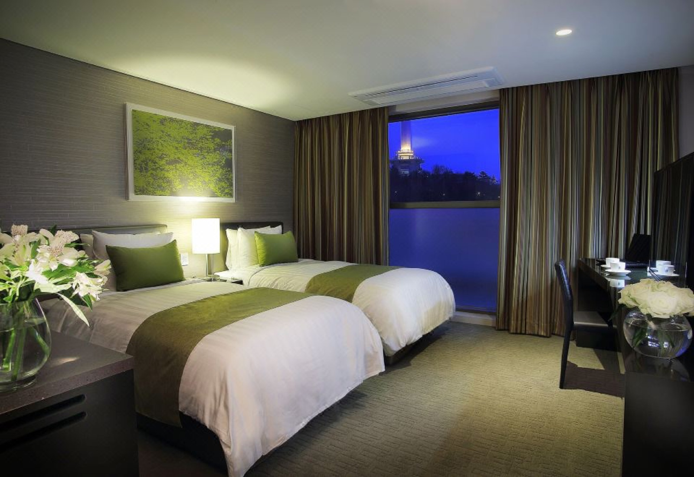
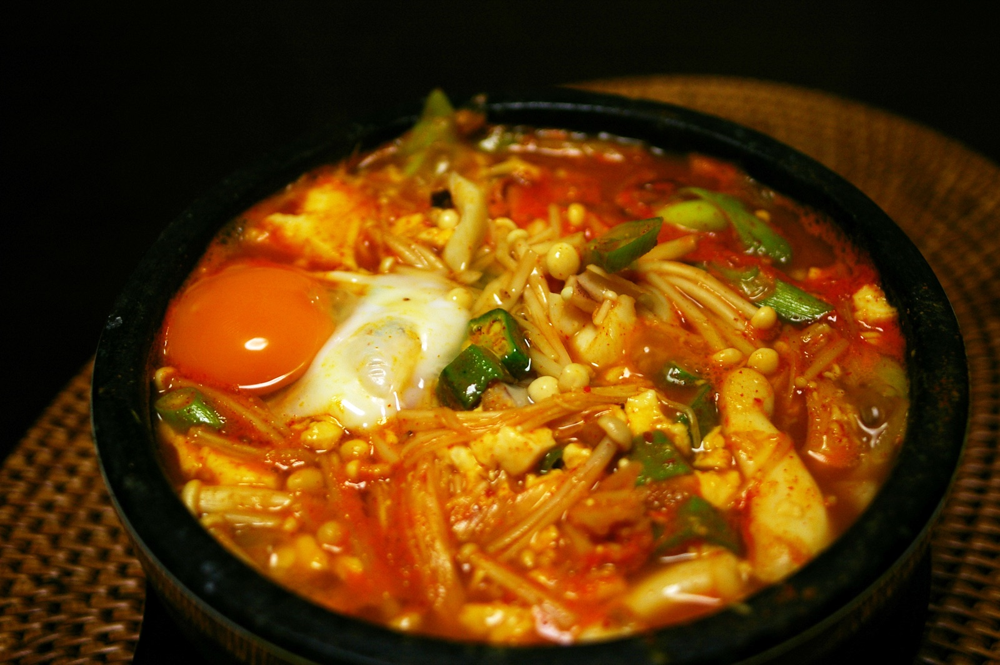
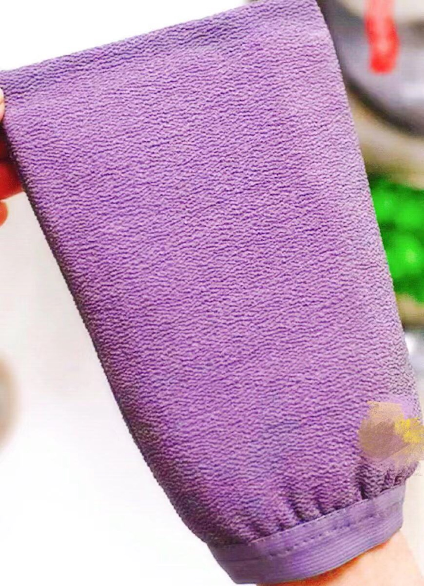

アベンツリー釜山

純豆腐ランチ

アカスリ
カンジャンケジャン
本日のモデルコース
-
1観光 午後着金海国際空港 到着到着ロビーに一歩出たら、そこはもう韓国モード。荷物を受け取ったらホテルへ出発！
-
2体験 15:00〜ホテル アベンツリー釜山 チェックイン国際市場から徒歩3分、チャガルチ駅からも徒歩圏内。南浦洞のど真ん中で、翌日の動きが最高にラクな立地。
-
3グルメ 15:30頃純豆腐（スンドゥブ）ランチ辛さがじんわり効いたスンドゥブチゲでお腹を満たしてから、午後の体験タイムへ出発。
午後：ママ＆ひろ 交代で「眉アート」×「アカスリ」
ふたり同時にサロン＆チムジルバンへ！片方が終わったら交代して、両方まるっと体験。
ママ
-
体験 16:00〜17:00眉アート施術店名・予約時間は下の情報ボックスに書き込んでね。
-
体験 17:00〜18:00アカスリ眉アートを終えたママが、先に始めていたひろと合流。
ひろ
-
体験 16:00〜17:00アカスリママが眉アートをしている間に、ひろは先にひとっ風呂＆アカスリ。
-
体験 17:00〜18:00眉アート施術ママと交代で施術スタート。
-
4グルメ 19:00頃南浦洞でカンジャンケジャン醤油だれに漬け込んだ生ガニを、ご飯と一緒にかき込む背徳のおいしさ。つるつるになった眉と肌で迎える、旅初日の締めくくり。
✨
眉アート（釜山で予約済み）
ママとひろ、交代で受ける本日のメインイベント！
店名・時間はまだ空欄なので手書きで埋めてね。ママの施術中はひろが先にアカスリへ、終わったら交代で入れ替わり。
📍 情報ボックス：アカスリ
アカスリ（チムジルバン）
旅の疲れも角質も、まるごと洗い流す韓国式スクラブ！
専用の「イタリータオル」でゴシゴシ全身の角質オフ。施術自体は15〜30分ほどで、終わった後の肌はつるっつる。前後の水分補給を忘れずに。
Photo: Wikimedia Commons（CCライセンス）
📍 情報ボックス：泊まる場所
ホテル アベンツリー釜山
この立地、反則級に便利すぎる…！
国際市場・チャガルチ市場・BIFF広場が全部歩ける距離。翌日のKTX移動まで、動きやすさを考えたらここ一択。
Photo: Trip.com掲載のホテル公式写真